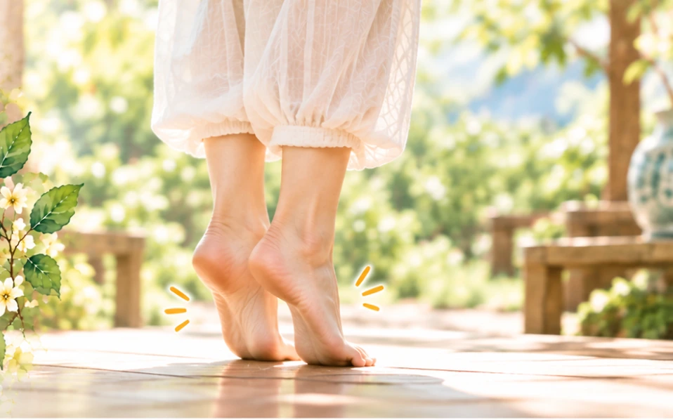

儘管有越來越多的研究顯示，「久坐」將會是人類健康的新殺手，其破壞的程度幾乎不亞於於「菸害」，但是坐著的生活型態卻仍然是有增無減，坐著辦公、坐著用餐、坐著看電視、坐著聊天、坐著上課、坐著開會、坐著滑手機⋯等，仔細回想一下的話，應該不難發現，一整天下來，屁股黏在椅子上的時間，居然比睡覺的時間還要多，人類的生活幾乎是離不開椅子。
最新研究發現，「久坐」是人類新殺手，多坐1小時，減壽22分鐘，相當於抽2根菸的危害。
其實「坐」不是不好，坐下休息不僅可以消除疲勞、恢復體力，還可以讓人放鬆，問題就在於坐著的時間太久的話，就可能對身體產生一些負面的影響，因此，如何在「舒服坐著」和「起來活動」的時間當中，取得適當地平衡，就成了相當重要的關鍵因素。
中國傳統的養生動作當中，有一招叫做「敦踵」，這的動作相當簡單，對於常常需要久坐的上班族群或是熟齡族群，都非常有幫助。
古書記載此法有利於排泄胸中的悶氣，所以對於上班族群而言，除了久坐之外，如果在公司受了悶氣，還可以用這個方法排除。
「敦踵」也就是我們常說的踮腳跟，方法非常簡單，首先保持身體立正的姿勢，兩腳併攏，雙手自然擺放在身體的兩側，然後慢慢地踮起腳尖，用腳趾緊緊抓住地面，之後再放鬆讓腳跟輕撞地面，此時全身會感受輕微的震動，由兩腿一路往上到整個背部，當震盪過幾次後，就會感覺全身舒暢，回味無窮，八段錦中的最後一勢「背後七顛百病消」，也是類似的動作。
「錦」指的是錦繡，是相當珍貴的絲織品，廣受人們的喜愛，所以它也應該意味著，這些導引健身動作，對於人的身體健康，可以發揮彌足珍貴的影響，所以值得好好地推廣。
「敦踵」的動作時間以一分鐘為限，力道的輕重緩急自行拿捏，總以自己能夠接受為原則，無需跟人比較，唯一要注意的就是，這一分鐘必須全神貫注，確實讓心回到自己身上，在做這些動作的時候，切記要保持著「心平氣和」的態度，千萬不可以三心二意，如何是三心二意？就是一邊做動作，一邊又同時想著或是做著其它的事，因為這些動作都是強調「以神御形」，如果做動作的同時，心有旁騖，或是想著事情；心有懸念，或是掛著某人，效果就會大打折扣，這種感受，在做「敦踵」這個動作的時候，最能明顯感受到。
你可以試試看這二種的差別，第一次的時候，先是故意想起一些事情，目的就是為了讓自己分心，而第二次的時候，則是閉上雙眼，全心全意地在做動作，這時應該就會明顯地感受到，腳跟撞擊地面的時候，一路向上回傳的輕微震動，能夠感受到這種震動，才能領略到之後的全身舒暢。
只做動作但是心不在焉，就是虛有其表、徒有形在，花拳繡腿的，根本起不了任何一點作用，說白話一點的話就是做心安的。
如果你也坐了一陣子，不妨起來試試，用心去感受，很舒服的。